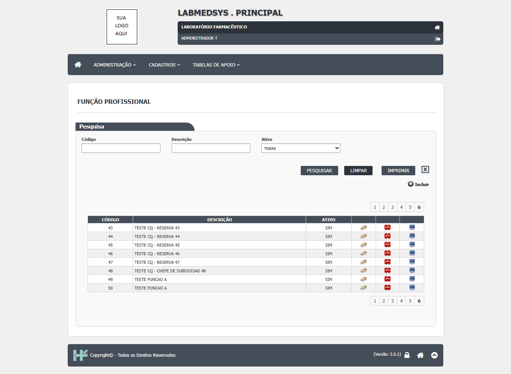

DV-PRI-027 · O histórico de Funções profissionais, Grupo de usuários e Centro de custo não mostra a justificativa digitada
Nas três telas a justificativa é cobrada ao alterar ("A Justificativa é obrigatória!" / "O campo justificativa é obrigatório!"), mas o histórico guarda o valor antigo e o novo sem o motivo: a linha "Justificativa:" aparece vazia (Funções e Grupo) ou nem aparece (Centro de custo) mesmo quando o texto foi digitado. Categoria de equipamento e Conta gerencial guardam o motivo corretamente. No Profissional, ao contrário, o motivo aparece no histórico (em maiúsculas).
Como reproduzir o erro, passo a passo
- Entrar no módulo Principal, abrir Administração › Funções profissionais (ou Cadastros › Grupo de usuários) e abrir um registro TESTE pelo ícone Editar.
- Mudar a descrição, digitar a justificativa TESTE justificativa da alteracao e SALVAR REGISTRO, confirmar com SIM.
- Voltar à lista e clicar em Ver Log Alteração do mesmo registro.
Esperado
O histórico mostra, para cada campo alterado: valor antigo, valor novo, quem, quando e a justificativa digitada.
Obtido
Valor antigo, valor novo, usuário, data e hora aparecem; "Justificativa:" fica em branco nas duas telas.
Evidência (captura da tela)


DV-PRI-028 · Funções profissionais aceita duas funções com a mesma descrição
Foram gravadas duas funções com a descrição `TESTE FUNCAO A` (códigos 49 e 50). Quem escolhe a função em outra tela (Profissional, Notificações) vê dois nomes iguais e não sabe qual é qual. Mesmo problema do DV-PRI-007 (Ambientes), agora em Funções profissionais.
Como reproduzir o erro, passo a passo
- Abrir Administração › Funções profissionais e clicar em Incluir.
- Descrição TESTE FUNCAO A, SALVAR REGISTRO, SIM.
- Incluir de novo com a mesma descrição.
- Pesquisar TESTE FUNCAO A.
Esperado
Recusar a segunda inclusão ("Descrição já cadastrada!"), como o Grupo de usuários faz com o nome.
Obtido
"Inclusão realizada com sucesso!" nas duas vezes; a lista mostra duas linhas iguais.
Evidência (captura da tela)
